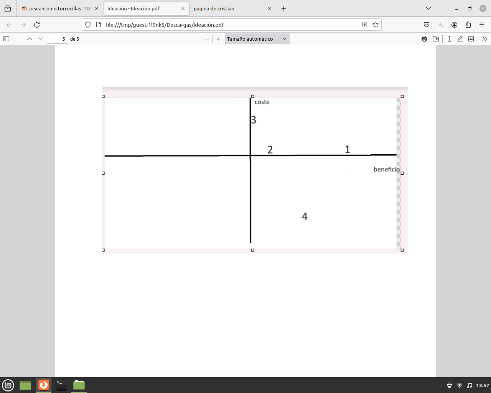

IDEACION
1-Primera idea
Este modelo está pensado para que mientras que un semáforo esté en rojo el otro esté en verde, el de los coches está en rojo pues el de peatones estará en verde.
Y te preguntarás si todos los semáforos de los coches se ponen en verde, no todos solo uno de un lado y otro de otro para que no se choquen y mientras los otros están en rojo los peatones pasan por los que están en verde

2-Segunda idea
Este modelo nos indica que hay 4 semáforos, hay 2 carreteras
principales cada uno con sus 2 carriles de ida y vuelta y a cada
lado de cada carretera principal hay 2 semáforos con pasos de
cebra y es muy simple si el semáforo está en rojo en la carretera
principal en la otra calle se pone verde y en la otra se cambia de
color cada 1 o 2 minutos depende de si hay alguna persona o
coche esperando.

3-Tercera idea
Este modelo enseña que hay una rotonda y 8 semáforos y cada 1
minuto se ponen en verde una parte vertical y lateral y la otra en
rojo

4-Cuarta idea
En esta foto podemos ver que hay tres calles las tres son de ida y
vuelta en la principal la más grande en la del medio hay un
semáforo qué esta izquierda pero que está por el medio esta
vertical este semáforo está en verde cuando el de la izquierda está
en rojo y el de la derecha está en verde cuando el del medio está
en rojo y por último el de la izquierda está en verde cuando el del
medio está en rojo.

preferencias
